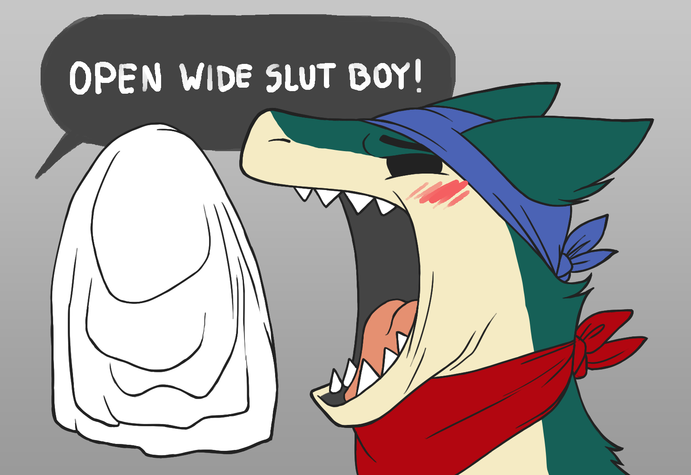
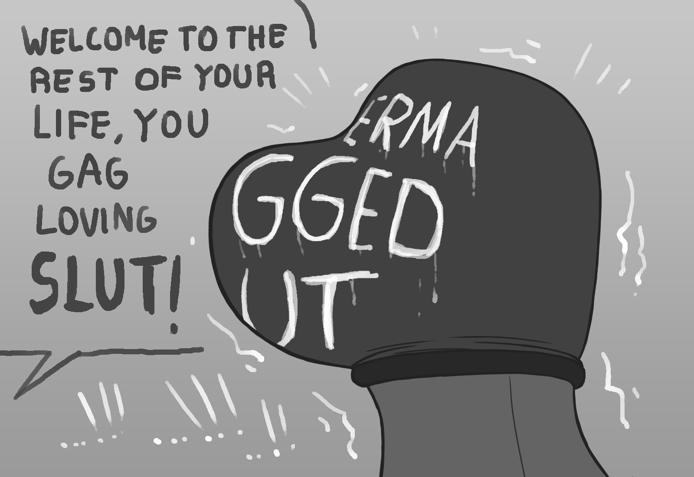

Stifled Flames
Written by TwistedSnakes
Illustrated by SilverAtlas

Smoke idly scrolled down the home page of KinkyRestraints. There were a lot of classified ads looking for subs, but none of them appealed to the bondage-eager typhlosion. “Finding slaves to tie up”, “Looking for a threesome with leather kinksters”, “Pain slut ready to serve”. Smoke sighed. He wasn’t judging people for their tastes, but all the bondage seemed so simple, maybe even boring. Smoke continued scrolling down. Suddenly, his eyes lit up as he saw a profile picture of a fellow typhlosion, with a description that read “Any gag enthusiasts looking for *HEAVY* hoods and gags? Casuals need not apply.” That was definitely something he’d like to do. When it came to gags, Smoke loved anything and everything. Whenever he played with them, it wasn’t just one, two, but at least ten in one go.
Smoke clicked on the ad, the other typhlosion’s profile came up. A face picture of a typhlosion dressed in a full latex suit, complete with a leather mask covering the lower half of his face. Smoke scanned the profile. The other typhlosion's name was Orion, with his kinks and interests stated as "Hoods and gags. And I mean hoods *AND* gags". But what excited Smoke the most was his "Searching for" criteria which stated "I'm looking for a slave who's willing to take all the gear I got. Only interested in subs who are serious about this. Don't waste my time if you're quitting after 5 gags."
The typhlosion felt his heart beat in excitement. This was just the kind of person he was looking for. With trembling fingers, he sent Orion a message: "Yooo! I'm up for your hoods and gags. Are you still interested?"
A reply came almost immediately: "I'm always looking, haha. But are you sure you can take it?"
"Sure can :D" Smokey replied, attaching a picture of him with his head encased in five layers of bondage hoods and cloth gags.
"Whoa, that's a lot of gags. Is that you?"
"Yeap!" came Smokey's reply.
"Okay, I'm game. When will you be free?" Orion replied. Then a few seconds later he followed up with another message: "Wait, in fact I'm good for today. Got any other plans?"
"I'm free! Totally READY!"
"Haha, slow down," came the reply, "Let's meet for coffee first, and if we hit off, I'll take you back to my place. Is 3pm at the Caffeine Cafe at 85 Sunny Street good with you?"
"*thumbs up* Let's go :D" Smokey typed excitedly.
"See you there"
Smoke looked at the clock. That’s in 30 minutes time. Better pack fast. He grabbed his gym bag, stuffed his collection of coloured bandanas in, and put on his favourite blue head bandana and red neck bandana. Just as he was halfway out the door, he remembered something. “Whoops! Almost forgot the most important thing.” He went back to his closet and pulled a shiny latex suit out, shoving it into the bag. Quickly, he slammed the closet door and bounced out of the house.
Orion was waiting for him when he reached the Caffeine Cafe. He was easily recognizable, sporting a leather body harness and spiked wrist cuffs. “You’re late kid,” Orion stated flatly. “Ahh I’m so sorry,” Smoke blushed. “Ahh I’m just messing with you stud,” he jested, patting Smoke on the head. “Coffee’s my treat”.
It wasn’t long before they were both strolling out of the cafe side by side. Smoke was shivering in anticipation. They had hit off almost immediately, and Orion was definitely keen on playing with him. Orion also showed him the hundreds of gear he had, ranging from leather gags to cloth hoods. Time couldn’t pass fast enough for Smoke, he wanted some of that action.
Fortunately for him, Orion’s house was a short walk away. “That’s not a house, that’s a MANSION!” “Haha thanks. I guess I like living a bit on the extravagant side. And I need the space for my dungeon,” he winked. Smoke got a tour of the house, until coming to the room he was waiting for. “And this is my dungeon.”
The “dungeon” was painted bold red on its walls, and black on the ceiling and floor. Along the walls were hundreds of hooks, each with different bondage gear hanging from it: pawcuffs, restraints, leather straps, floggers, and most importantly, hoods and gags. Tables covered with more tools and toys were lined against the wall. In the middle, there was a solid wooden chair, with leather restraints across the armrests, backrest and legs.
“So, Smokey boy, what gear did you bring today?” “Uhh, I got these bandanas, which I usually fold up for use as gags, and this latex suit.” Orion nudged some of the gear around, carefully examining the toys. “Mm that’s not bad. Put on this suit. I’ll get some stuff ready.”
As Smoke put on the latex suit, Orion got ready some documents and a pen. Smokey slipped his feet down the legs of the suit, and adjusted it so his groin was positioned under the crotch pouch. He slid his paws down the sleeves, and Orion helped him pull up the zip at the back. He stepped back and admired himself in the mirror. The suit hugged his body tightly, reflecting sleek shiny lines going down his body. “That looks really nice on you. So, I’ll need you to sign this document to show you consent to our play. After all, that many hoods can get kind of dangerous. I mean, I do have a nifty trick to make it safe, but just in case, you know.” Smoke quickly complied, his rubber bulge expanding a little in excitement.
“Alright, sit in the chair.” Smoke didn’t need to be asked twice. He sat himself in the chair almost immediately, and Orion strapped him in. He tried to wriggle against the bonds, but his body, arms and legs was strapped in tightly. His neck was also strapped to the back of the chair, so he was restrained into a straight sitting posture. “Struggle all you want, you’re gonna get it all.” With Smoke watching him, Orion walked over to the tables, choosing his gear carefully. He picked up various pieces of fabrics, feeling it in his paws. He came back with wads of cloth and straps. “Open up boy. Wider. Wider.” Satisfied that Smoke’s jaw was opened to its maximum, he rolled up a rectangle of white cloth and pushed it into Smoke’s maw, filling it up. The initial shock of the thrust caused Smoke to yelp in surprise, but as the gag settled into his cheeks and pressed his tongue down, he began to purr in pleasure.
“Wait, do you still want to wear your bandanas?” Orion asked, referring to the blue head rag and red neck bandana Smoke was still wearing. He nodded, saying “mmm” in approval. “Alright then”. Another yellow cloth was picked up, and tied around his mouth to the back of his head. It pushed the cloth deeper into his mouth, touching the back of his throat. The pressure was building up in his mouth. His teeth were sunk deeply into the gag, making it almost impossible to move his jaw. The feeling of enjoyment grew, and he moaned to show it.
Orion went back to the tables, and brought a huge bottle of sticky glue. It was the heavy-duty, permanent type, but Smokey didn’t have to know that. “Want to try some glue?” Orion asked. Smoke hasn’t tried it before, but Orion seemed to know what he was doing, and it seemed fun. Smoke nodded, and Orion squeezed the bottle, using more cloth to smear the glue all over the gags, binding to the edge of his mouth. “Try speaking.” he commanded. Smoke tried to pull his jaw open, but with it opened to the maximum, and the glue slowly contracting as it dried, he could only wriggle his jaw from side to side. “Mmm,” he tried to speak. “Good. Still okay? Or wanna chicken out on me?” More moans of pleasure from Smoke told Orion what he needed to know.
Orion rubbed Smoke’s hard bulge pushing from under the rubber suit. “Mmmm” came the response of approval. “Alright, the next part might be new to you, so I need you to trust me on this one.” Taking some rubber plugs, he pushed them up Smoke’s nostrils with two of his digits. Wait what? How was he going to breathe? He tried to pull his head away, but Orion held his jaw in place with his other paw, and slid the plugs in place, applying generous amounts of glue over his nostrils, sealing them in place.
Smoke could feel his heart beating in his chest. He was going to suffocate and die here. He whimpered in fear, pleading to Orion with his eyes. Why did he trust a stranger to restrain him like this? He closed his eyes, waiting for the burning in the lungs that would accompany suffocation. Wait. He was still alright. Was he dead? He wasn’t breathing, but...he was definitely alive. Or was he in heaven? Was his death painless? He peeked his eyes open. “You alright Smokey boy?” Orion was still there. That means he wasn’t dead. Then how was he… “Arceus’ magic,” Orion interrupted his thoughts. “Keeps you alive, even without air. I had some of that potion on your gag, so you’re good.” Smoke nodded his head.
“Let’s continue.” Orion grabbed a roll of grey duct tape, and peeled off the end. He cut off a few long strips of tape, taping off his mouth and nose, forming a smooth, taped surface across the front of his maw. He wasn’t used to his jaw being held this wide open for so long, and with the heavy gagging, he was definitely feeling a little uncomfortable. Beads of sweat formed on his temples. He could take a few more layers though, so by Arceus he was going to see it through.
Orion didn’t seem to be slowing down though. He picked up two of Smoke’s bandanas, a purple and turquoise cloth, tying them around his maw. After that, he picked up the roll of duct tape, this time wrapping it round and round his mouth and nostrils, cramming the gag further and further down his throat. A brown leather muzzle was next, and Orion tried to fit it over Smoke’s mouth. It wasn’t working though, as the muzzle wasn’t designed for someone with a gaping maw. Orion knew how to fix that though. Three zip ties were pulled around Smoke’s snout, increasingly tightened until his mouth was almost closed. His cheeks were bulging, and the pressure was bordering painful. “MMMM!” he tried to signal to Orion, but he brown leather muzzle was pulled over his maw, muffling his grunts.
Orion worked quickly. Two more of Smoke’s colored bandanas went over his mouth and tied behind his head, followed by another thick layer of tape. After that, he took a thick leather belt, and pulled it across his mouth around the back of Smoke’s head. Orion had to exert himself a little, his muscles straining from the pressure as he pulled the belt buckle to the tightest belt hole. As the buckle clicked into place, he took two more straps to close Smoke’s maw together. Another leather muzzle appeared, this time with a few leather buckles on it, making it adjustable. However, adjustable just meant it could only go tighter. The muzzle went on, and the buckles were pulled to their tightest.
Smoke was getting a bit worried. He was definitely turned on with all the gagging going on, but it was getting a bit intense. Perhaps they should’ve agreed on a safeword. Not that he’d be able to say it now though. But maybe loosening the gags a little would help him out a little. “We’re halfway done boy,” Orion informed him, patting him on the cheek. Wait what? HALFWAY? Smoke tried to communicate with Orion with his hurried yelps and scared eyes. Surely Orion would notice his pleas. And yeap, he did. As Orion finished up another two layers of cloth over his mouth, and an additional headscarf pressing his ears down, Orion took one long strip of cloth, and twisted it across his neck. His vocal chords were squeezed, and he wheezed a little.
He wanted out. The layers were getting a bit too thick for him, and he was sweating from the heat trapped inside. Please, Orion had to respond. However, Orion only grinned, and pressed a glue-soaked rectangle of fabric over his eyes, securing it with more cloth. Smoke was now trapped with no way of communicating to Orion, although he sincerely doubt Orion would do anything to help his predicament. He struggled against the chair restraints, his rubber-clad body squeaking in response to his movements.
With his vision gone, he could only hear more layers of cloth going over his head, each getting pulled tight and knotted behind his head. Another layer of duct tape came, its distinctive ZHHHKK sounds as it was wrapped around his entire head. Smoke was pretty sure that roll was used up, because he could hear Orion opening up another few rolls to use. A few more layers, and his head was encased in a hard shell of cloth, glue, leather and tape.
Suddenly, there was additional tightness across various parts of his head, as leather straps were tightened over the gag, clamped over his jaw, pressed against his eyes, and wrapped around his head. The pressure turned into pain. “MMM! MMM! MMMMMM!” He wasn’t sure why he was trying to yell, because Orion wasn’t going to release him until it was over. Perhaps it was due to survival instinct that he was trying to call for help. Ugh. He’d have to wait for Orion to have his fun with the gags, and then he’d get to go free.
Meanwhile, Orion was stretching a glue-coated latex hood over Smoke’s head, making sure that the zipper of the rubber suit was secured below the hood. Once it was in place, he used a hair-dryer to dry the hood, causing it to shrink and compress the solid mass that used to be the face of a cute typhlosion. He caressed his paws over the smooth rubbery surface. Ah, the smooth, formless appearance that all subs should have. However, there was some final touches he needed to do. From the corner of the room, he dragged out a steel helmet made of two halves in the shape of a full typhlosion’s head. “Ugff” he heaved as he lifted up the heavy metal piece that formed the back of the head, sitting them on top of the chair restraints around Smoke’s head. The front half was put in position too, enclosing the formless head in its steel prison. He picked up a blowtorch from under the chair, and welded the two halves together.
Smoke could hear the faint sound of metal clunking together, followed by long periods of BZZTT. He was getting nervous about what was going on in the outside world, but he was half-worried that he wouldn’t want to know. His neck was feeling the stress of carrying all the extra weight, and he had to tense his muscles there to keep his head up. Unbeknownst to him, Orion was finishing up. A black hood made of thicker rubber was glued over the metal head case, giving it a smooth, solid look. A posture collar came next, glued in place to support his tired neck, at the cost of being unable to move or turn his head.
Orion then undid the straps binding the rubber-suited body to the chair, and lifted him out of the chair onto the ground. Smoke could feel himself being lowered to the ground, but the moment Orion let go, he fell to the ground with the mass of his head pulling him down. He lifted himself up with his arms, putting himself in a crawling position. “Will you let me go now?” he tried to plead, but all that came out was some vibrations from the formless head.
Orion took a tube of black latex glue, and glued it over the exposed zip on Smoke’s back, trapping Smoke’s body in a smooth, rubbery suit. He gave Smoke’s bulge one last squeeze, then left him alone. Smoke whimpered from under his layers of encasement. He was getting used to the pressure, and all the layers of gagging definitely turned him on. However, getting those layers off him would take some time, so it would be great if Orion got those off him soon.

Orion, however wasn’t ever intending to let him go. After all, Smoke had signed the forms and legally consented to him permanently encasing Smoke, along with full ownership of him. Ahh, the plight of the naive. At his computer, Orion idly scrolled down the home page of KinkyRestraints. At the bottom, he typed a new ad: “For sale: Perma-gagged slut. Securely bound with various materials and adhesives.” He hit the enter button, then leaned back against his chair. That was fun.
~ End ~